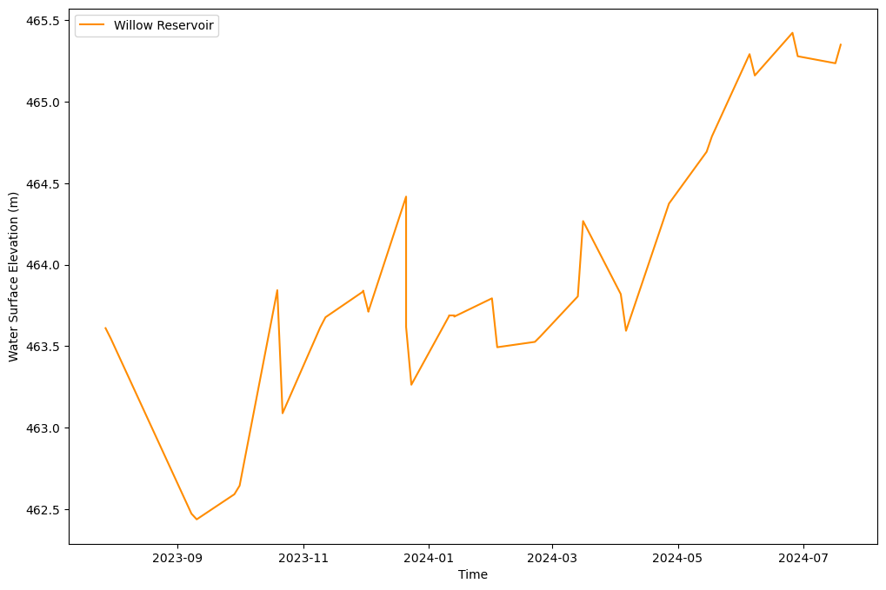

import geopandas as gpd
import glob
from pathlib import Path
import pandas as pd
import os
import zipfile
import earthaccess
import matplotlib.pyplot as plt
pd.set_option('display.max_columns', None) #all columns displayed defaultFrom the PO.DAAC Cookbook, to access the GitHub version of the notebook, follow this link.
Note: This notebook uses Version C (2.0) of SWOT data that was available at the time of this notebook’s development. The most recent data is now available as Version D for SWOT collections. The last Version C measurement will be until May 3rd, 2025. The first Version D measurement starts on May 5th, 2025.
SWOT Shapefile Data Conversion to CSV
Notebook showcasing how to merge/concatenate multiple lake shapefiles into a single file.
- Utilizing the merged shapefile and converting it to a csv file.
- Option to query the new dataset based on users choice; either ‘lake_id’ or water surface elevation (‘wse’), etc.
- Using the queried variable to export it as a csv or shapefile.
Note, PO.DAAC will be expanding the Hydrocron API we built for rivers to include lakes, but as of this moment, here is a work around to produce lake time series from shapefiles!
Authors: Nicholas Tarpinian, Cassie Nickles, NASA PO.DAAC
Import libraries
Before you start
Before you beginning this tutorial, make sure you have an account in the Earthdata Login, which is required to access data from the NASA Earthdata system. Please visit https://urs.earthdata.nasa.gov to register for an Earthdata Login account. It is free to create and only takes a moment to set up.
auth = earthaccess.login() Search for SWOT data
Let’s start our search for Lake Vector Shapefiles in North America. SWOT files come in “Prior”, “Obs” or “Unassigned” versions in the same collection, here we want the Prior Lakes from the Prior Lake Database. We will also only get files for North America, or ‘NA’ and can call out a specific pass number that we want. Each dataset has it’s own shortname associate with it, for the SWOT Lake shapefiles, it is SWOT_L2_HR_LakeSP_2.0.
Let’s say we are interested in a lake that has SWOT passes numbered 188 and 259. (These SWOT passes were identified for this region using the .kmz file of SWOT passes/swaths imported into Google Earth Pro for visualization.)
# Enter pass number(s)
pass_number = ["188", "259"]
# Enter continent code
continent_code = "NA" # e.g. "AF", "NA", "EU", "SI", "AS", "AU", "SA", "AR", "GR"
# Retrieves granulev and links list from the passes we want, in this case by passing to `earthdata.search_data` function the data collection shortname and temporal bounds
links_list = []
for p in range(len(pass_number)):
lake_results = earthaccess.search_data(short_name = 'SWOT_L2_HR_LAKESP_2.0',
temporal = ('2023-07-01 00:00:00', '2024-07-24 23:59:59'),
granule_name = "*Prior*_" + pass_number[p] + "_" + continent_code + "*")
for r in range(len(lake_results)):
lake_link = earthaccess.results.DataGranule.data_links(lake_results[r], access='external')[0]
links_list.append(lake_link)Granules found: 20
Granules found: 19The SWOT orbit cycle is 21 days, these numbers make sense for the time range selected.
Download the Data into a folder
earthaccess.download(links_list, "../datasets/data_downloads/SWOT_files/")
folder = Path("../datasets/data_downloads/SWOT_files")Unzip shapefiles in existing folder
for item in os.listdir(folder): # loop through items in dir
if item.endswith(".zip"): # check for ".zip" extension
zip_ref = zipfile.ZipFile(f"{folder}/{item}") # create zipfile object
zip_ref.extractall(folder) # extract file to dir
zip_ref.close() # close fileOpening multiple shapefiles from within a folder
Lets open all the shapefiles we’ve downloaded together into one database. This approach is ideal for a small number of granules, but if you’re looking to create large timeseries, consider using the PO.DAAC Hydrocron tool that will be available for lakes ~Sept 2024.
filenames = []
for l in range(len(links_list)):
filenames.append(links_list[l].split("/")[-1])
# replace zip file names with .shp ending
filename_shps = [filename.replace('zip', 'shp') for filename in filenames]
#initialize opened list of files
SWOT_HR_shps = []
# Loop through queried granules to open and stack all acquisition dates
for j in range(len(filename_shps)):
SWOT_HR_shps.append(gpd.read_file(f'../datasets/data_downloads/SWOT_files/{filename_shps[j]}')) # Combine granules from all acquisition dates into one dataframe
SWOT_HR_df = gpd.GeoDataFrame(pd.concat(SWOT_HR_shps, ignore_index=True))
# Sort dataframe by lake_id and time
SWOT_HR_df = SWOT_HR_df.sort_values(['lake_id', 'time'])
SWOT_HR_df| lake_id | reach_id | obs_id | overlap | n_overlap | time | time_tai | time_str | wse | wse_u | wse_r_u | wse_std | area_total | area_tot_u | area_detct | area_det_u | layovr_val | xtrk_dist | ds1_l | ds1_l_u | ds1_q | ds1_q_u | ds2_l | ds2_l_u | ds2_q | ds2_q_u | quality_f | dark_frac | ice_clim_f | ice_dyn_f | partial_f | xovr_cal_q | geoid_hght | solid_tide | load_tidef | load_tideg | pole_tide | dry_trop_c | wet_trop_c | iono_c | xovr_cal_c | lake_name | p_res_id | p_lon | p_lat | p_ref_wse | p_ref_area | p_date_t0 | p_ds_t0 | p_storage | geometry | |
|---|---|---|---|---|---|---|---|---|---|---|---|---|---|---|---|---|---|---|---|---|---|---|---|---|---|---|---|---|---|---|---|---|---|---|---|---|---|---|---|---|---|---|---|---|---|---|---|---|---|---|---|
| 0 | 7110570263 | 71181400383;71181301143;71181400253;7118140019... | no_data | no_data | no_data | -1.000000e+12 | -1.000000e+12 | no_data | -1.000000e+12 | -1.000000e+12 | -1.000000e+12 | -1.000000e+12 | -1.000000e+12 | -1.000000e+12 | -1.000000e+12 | -1.000000e+12 | -1.000000e+12 | -1.000000e+12 | -1.000000e+12 | -1.000000e+12 | -1.000000e+12 | -1.000000e+12 | -1.000000e+12 | -1.000000e+12 | -1.000000e+12 | -1.000000e+12 | -999 | -1.000000e+12 | 0 | -999 | -999 | -999 | -1.000000e+12 | -1.000000e+12 | -1.000000e+12 | -1.000000e+12 | -1.000000e+12 | -1.000000e+12 | -1.000000e+12 | -1.000000e+12 | -1.000000e+12 | NOTIGI RESERVOIR;GRANVILLE;SUWANNEE RIVER;RIVI... | 702 | -99.127615 | 56.877484 | -1.000000e+12 | 3659.707925 | no_data | -1.000000e+12 | -1.000000e+12 | None |
| 75228 | 7110570263 | 71181400383;71181301143;71181400253;7118140019... | no_data | no_data | no_data | -1.000000e+12 | -1.000000e+12 | no_data | -1.000000e+12 | -1.000000e+12 | -1.000000e+12 | -1.000000e+12 | -1.000000e+12 | -1.000000e+12 | -1.000000e+12 | -1.000000e+12 | -1.000000e+12 | -1.000000e+12 | -1.000000e+12 | -1.000000e+12 | -1.000000e+12 | -1.000000e+12 | -1.000000e+12 | -1.000000e+12 | -1.000000e+12 | -1.000000e+12 | -999 | -1.000000e+12 | 0 | -999 | -999 | -999 | -1.000000e+12 | -1.000000e+12 | -1.000000e+12 | -1.000000e+12 | -1.000000e+12 | -1.000000e+12 | -1.000000e+12 | -1.000000e+12 | -1.000000e+12 | NOTIGI RESERVOIR;GRANVILLE;SUWANNEE RIVER;RIVI... | 702 | -99.127615 | 56.877484 | -1.000000e+12 | 3659.707925 | no_data | -1.000000e+12 | -1.000000e+12 | None |
| 171841 | 7110570263 | 71181400383;71181301143;71181400253;7118140019... | no_data | no_data | no_data | -1.000000e+12 | -1.000000e+12 | no_data | -1.000000e+12 | -1.000000e+12 | -1.000000e+12 | -1.000000e+12 | -1.000000e+12 | -1.000000e+12 | -1.000000e+12 | -1.000000e+12 | -1.000000e+12 | -1.000000e+12 | -1.000000e+12 | -1.000000e+12 | -1.000000e+12 | -1.000000e+12 | -1.000000e+12 | -1.000000e+12 | -1.000000e+12 | -1.000000e+12 | -999 | -1.000000e+12 | 0 | -999 | -999 | -999 | -1.000000e+12 | -1.000000e+12 | -1.000000e+12 | -1.000000e+12 | -1.000000e+12 | -1.000000e+12 | -1.000000e+12 | -1.000000e+12 | -1.000000e+12 | NOTIGI RESERVOIR;GRANVILLE;SUWANNEE RIVER;RIVI... | 702 | -99.127615 | 56.877484 | -1.000000e+12 | 3659.707925 | no_data | -1.000000e+12 | -1.000000e+12 | None |
| 259953 | 7110570263 | 71181400383;71181301143;71181400253;7118140019... | no_data | no_data | no_data | -1.000000e+12 | -1.000000e+12 | no_data | -1.000000e+12 | -1.000000e+12 | -1.000000e+12 | -1.000000e+12 | -1.000000e+12 | -1.000000e+12 | -1.000000e+12 | -1.000000e+12 | -1.000000e+12 | -1.000000e+12 | -1.000000e+12 | -1.000000e+12 | -1.000000e+12 | -1.000000e+12 | -1.000000e+12 | -1.000000e+12 | -1.000000e+12 | -1.000000e+12 | -999 | -1.000000e+12 | 1 | -999 | -999 | -999 | -1.000000e+12 | -1.000000e+12 | -1.000000e+12 | -1.000000e+12 | -1.000000e+12 | -1.000000e+12 | -1.000000e+12 | -1.000000e+12 | -1.000000e+12 | NOTIGI RESERVOIR;GRANVILLE;SUWANNEE RIVER;RIVI... | 702 | -99.127615 | 56.877484 | -1.000000e+12 | 3659.707925 | no_data | -1.000000e+12 | -1.000000e+12 | None |
| 322528 | 7110570263 | 71181400383;71181301143;71181400253;7118140019... | no_data | no_data | no_data | -1.000000e+12 | -1.000000e+12 | no_data | -1.000000e+12 | -1.000000e+12 | -1.000000e+12 | -1.000000e+12 | -1.000000e+12 | -1.000000e+12 | -1.000000e+12 | -1.000000e+12 | -1.000000e+12 | -1.000000e+12 | -1.000000e+12 | -1.000000e+12 | -1.000000e+12 | -1.000000e+12 | -1.000000e+12 | -1.000000e+12 | -1.000000e+12 | -1.000000e+12 | -999 | -1.000000e+12 | 2 | -999 | -999 | -999 | -1.000000e+12 | -1.000000e+12 | -1.000000e+12 | -1.000000e+12 | -1.000000e+12 | -1.000000e+12 | -1.000000e+12 | -1.000000e+12 | -1.000000e+12 | NOTIGI RESERVOIR;GRANVILLE;SUWANNEE RIVER;RIVI... | 702 | -99.127615 | 56.877484 | -1.000000e+12 | 3659.707925 | no_data | -1.000000e+12 | -1.000000e+12 | None |
| ... | ... | ... | ... | ... | ... | ... | ... | ... | ... | ... | ... | ... | ... | ... | ... | ... | ... | ... | ... | ... | ... | ... | ... | ... | ... | ... | ... | ... | ... | ... | ... | ... | ... | ... | ... | ... | ... | ... | ... | ... | ... | ... | ... | ... | ... | ... | ... | ... | ... | ... | ... |
| 1314549 | 8323596342 | no_data | 711048L000473 | 88 | 1 | 7.708511e+08 | 7.708511e+08 | 2024-06-04T21:18:29Z | 2.776240e+02 | 7.000000e-02 | 6.300000e-02 | 2.370000e-01 | 2.642100e-02 | 1.300000e-03 | 2.121900e-02 | 1.300000e-03 | 1.870000e-01 | -2.498478e+04 | -1.000000e+12 | -1.000000e+12 | -1.000000e+12 | -1.000000e+12 | -1.000000e+12 | -1.000000e+12 | -1.000000e+12 | -1.000000e+12 | 0 | 1.969060e-01 | 1 | -999 | 0 | 0 | -4.441765e+01 | 5.614300e-02 | -4.297000e-03 | -3.806000e-03 | -1.671000e-03 | -2.228446e+00 | -9.832900e-02 | -5.466000e-03 | -1.690160e-01 | no_data | -99999999 | -97.963339 | 60.129859 | -1.000000e+12 | 0.017100 | no_data | -1.000000e+12 | -1.000000e+12 | POLYGON ((-97.96408 60.12884, -97.96448 60.128... |
| 1463517 | 8323596342 | no_data | 711048L000520 | 100 | 1 | 7.744565e+08 | 7.744566e+08 | 2024-07-16T14:48:37Z | 2.773480e+02 | 4.700000e-02 | 4.400000e-02 | 8.300000e-02 | 2.986900e-02 | 1.566000e-03 | 2.986900e-02 | 1.566000e-03 | 1.950000e-01 | -2.455828e+04 | -1.000000e+12 | -1.000000e+12 | -1.000000e+12 | -1.000000e+12 | -1.000000e+12 | -1.000000e+12 | -1.000000e+12 | -1.000000e+12 | 0 | 0.000000e+00 | 0 | -999 | 0 | 0 | -4.441669e+01 | 1.499450e-01 | 1.197200e-02 | 1.210800e-02 | -1.904000e-03 | -2.236376e+00 | -1.084160e-01 | -6.388000e-03 | 1.187860e-01 | no_data | -99999999 | -97.963339 | 60.129859 | -1.000000e+12 | 0.017100 | no_data | -1.000000e+12 | -1.000000e+12 | POLYGON ((-97.96308 60.12911, -97.96348 60.129... |
| 1028088 | 8323596352 | no_data | 711048L000505 | 66 | 1 | 7.636403e+08 | 7.636403e+08 | 2024-03-13T10:18:09Z | 2.920650e+02 | 4.100000e-01 | 1.370000e-01 | 6.017000e+00 | 1.326621e+00 | 3.902100e-02 | 1.250733e+00 | 3.902100e-02 | 1.740000e-01 | -2.667111e+04 | -1.000000e+12 | -1.000000e+12 | -1.000000e+12 | -1.000000e+12 | -1.000000e+12 | -1.000000e+12 | -1.000000e+12 | -1.000000e+12 | 1 | 5.720400e-02 | 2 | -999 | 0 | 1 | -4.447844e+01 | -5.466300e-02 | -4.183000e-03 | -4.793000e-03 | 2.505000e-03 | -2.245944e+00 | -2.276200e-02 | -3.519000e-03 | 1.136834e+00 | no_data | -99999999 | -97.907676 | 60.115501 | -1.000000e+12 | 0.272700 | no_data | -1.000000e+12 | -1.000000e+12 | MULTIPOLYGON (((-97.92393 60.11196, -97.92430 ... |
| 572224 | 8323596382 | no_data | 711048L000089 | 92 | 1 | 7.564295e+08 | 7.564295e+08 | 2023-12-20T23:17:48Z | 2.733640e+02 | 1.260000e-01 | 3.600000e-02 | 2.860000e-01 | 2.513160e-01 | 2.459000e-03 | 8.624900e-02 | 2.459000e-03 | -3.400000e-01 | -2.411748e+04 | -1.000000e+12 | -1.000000e+12 | -1.000000e+12 | -1.000000e+12 | -1.000000e+12 | -1.000000e+12 | -1.000000e+12 | -1.000000e+12 | 0 | -1.000000e+12 | 2 | -999 | 0 | 1 | -4.439639e+01 | 9.180000e-04 | 6.498000e-03 | 5.883000e-03 | 5.808000e-03 | -2.253574e+00 | -3.238500e-02 | -3.949000e-03 | -9.471170e-01 | no_data | -99999999 | -98.009932 | 60.190801 | -1.000000e+12 | 0.058500 | no_data | -1.000000e+12 | -1.000000e+12 | POLYGON ((-98.01243 60.18550, -98.01283 60.185... |
| 110376 | 8323596402 | no_data | 711048R001013 | 100 | 1 | 7.474160e+08 | 7.474160e+08 | 2023-09-07T15:32:31Z | 3.195310e+02 | 4.340000e-01 | 6.300000e-02 | 6.110000e-01 | 3.798540e-01 | 8.457000e-03 | 3.534430e-01 | 8.457000e-03 | 3.150000e-01 | 1.122226e+04 | -1.000000e+12 | -1.000000e+12 | -1.000000e+12 | -1.000000e+12 | -1.000000e+12 | -1.000000e+12 | -1.000000e+12 | -1.000000e+12 | 1 | 6.953000e-02 | 0 | -999 | 1 | 0 | -4.346914e+01 | 1.119130e-01 | 2.315000e-03 | 2.644000e-03 | 1.051000e-03 | -2.219860e+00 | -1.208470e-01 | -4.426000e-03 | 7.872600e-02 | no_data | -99999999 | -98.394062 | 59.813826 | -1.000000e+12 | 0.078300 | no_data | -1.000000e+12 | -1.000000e+12 | MULTIPOLYGON (((-98.39097 59.80787, -98.39108 ... |
2406498 rows × 51 columns
Querying a Shapefile
Let’s get the attributes from a particular reach of the merged shapefile. If you want to search for a specific lake_id, Lake IDs can be identified in the Prior Lake Database (PLD) - Add in the PLD layer into Hydroweb.next to see the lakes SWOT products are based upon.
lake = SWOT_HR_df.query("lake_id == '7421108633'") #Willow Reservoir, WI
# Remove fill values for missing observations
lake = lake.loc[(lake["wse"] != -999999999999.0)]
# Convert time_str to datetime format
lake.time_str = pd.to_datetime(lake.time_str)
lake| lake_id | reach_id | obs_id | overlap | n_overlap | time | time_tai | time_str | wse | wse_u | wse_r_u | wse_std | area_total | area_tot_u | area_detct | area_det_u | layovr_val | xtrk_dist | ds1_l | ds1_l_u | ds1_q | ds1_q_u | ds2_l | ds2_l_u | ds2_q | ds2_q_u | quality_f | dark_frac | ice_clim_f | ice_dyn_f | partial_f | xovr_cal_q | geoid_hght | solid_tide | load_tidef | load_tideg | pole_tide | dry_trop_c | wet_trop_c | iono_c | xovr_cal_c | lake_name | p_res_id | p_lon | p_lat | p_ref_wse | p_ref_area | p_date_t0 | p_ds_t0 | p_storage | geometry | |
|---|---|---|---|---|---|---|---|---|---|---|---|---|---|---|---|---|---|---|---|---|---|---|---|---|---|---|---|---|---|---|---|---|---|---|---|---|---|---|---|---|---|---|---|---|---|---|---|---|---|---|---|
| 70153 | 7421108633 | no_data | 742074L000285;742074L000379 | 91;0 | 2 | 7.438108e+08 | 7.438108e+08 | 2023-07-27 22:06:40+00:00 | 463.611 | 0.002 | 0.001 | 0.108 | 20.476219 | 0.036599 | 20.372474 | 0.036599 | 0.013 | -19436.229 | -1.000000e+12 | -1.000000e+12 | -1.000000e+12 | -1.000000e+12 | -1.000000e+12 | -1.000000e+12 | -1.000000e+12 | -1.000000e+12 | 1 | 0.005067 | 0 | -999 | 1 | 1 | -31.098343 | -0.075313 | -0.006001 | -0.006082 | -0.002511 | -2.186316 | -0.264965 | -0.005642 | -3.498030e-01 | WILLOW RESERVOIR;WILLOW FLOWAGE | 1453 | -89.882334 | 45.719562 | -1.000000e+12 | 21.401108 | no_data | -1.000000e+12 | -1.000000e+12 | MULTIPOLYGON (((-89.93124 45.72805, -89.93171 ... |
| 1538047 | 7421108633 | no_data | 742235R000207;742235R000203;742235R000208;7422... | 53;2;15;1;1;1;1;1;1;0;0;0;0;0;0;0;0;0;0;0 | 20 | 7.440316e+08 | 7.440316e+08 | 2023-07-30 11:26:18+00:00 | 463.547 | 0.007 | 0.002 | 0.118 | 17.682375 | 0.031983 | 15.923572 | 0.031983 | 0.013 | 17795.550 | -1.000000e+12 | -1.000000e+12 | -1.000000e+12 | -1.000000e+12 | -1.000000e+12 | -1.000000e+12 | -1.000000e+12 | -1.000000e+12 | 0 | 0.099466 | 0 | -999 | 1 | 0 | -31.102056 | -0.013887 | 0.008220 | 0.007828 | -0.002397 | -2.200979 | -0.099860 | -0.003437 | 3.984390e-01 | WILLOW RESERVOIR;WILLOW FLOWAGE | 1453 | -89.882334 | 45.719562 | -1.000000e+12 | 21.401108 | no_data | -1.000000e+12 | -1.000000e+12 | MULTIPOLYGON (((-89.88040 45.69027, -89.88045 ... |
| 144201 | 7421108633 | no_data | 742074L000521;742074L000520;742074L000636 | 86;0;0 | 3 | 7.474162e+08 | 7.474162e+08 | 2023-09-07 15:36:52+00:00 | 462.473 | 0.004 | 0.002 | 0.156 | 18.984428 | 0.035149 | 18.547000 | 0.035149 | 0.018 | -19801.049 | -1.000000e+12 | -1.000000e+12 | -1.000000e+12 | -1.000000e+12 | -1.000000e+12 | -1.000000e+12 | -1.000000e+12 | -1.000000e+12 | 0 | 0.023041 | 0 | -999 | 0 | 0 | -31.100694 | 0.097939 | 0.000264 | 0.000239 | 0.000261 | -2.192609 | -0.142751 | -0.006593 | -3.143100e-02 | WILLOW RESERVOIR;WILLOW FLOWAGE | 1453 | -89.882334 | 45.719562 | -1.000000e+12 | 21.401108 | no_data | -1.000000e+12 | -1.000000e+12 | MULTIPOLYGON (((-89.89536 45.75987, -89.89574 ... |
| 1586938 | 7421108633 | no_data | 742235R000202;742235R000209;742235R000224;7422... | 77;5;0;0;0;0 | 6 | 7.476370e+08 | 7.476370e+08 | 2023-09-10 04:56:30+00:00 | 462.438 | 0.004 | 0.002 | 0.182 | 18.651090 | 0.034293 | 17.137234 | 0.034293 | 0.014 | 17938.629 | -1.000000e+12 | -1.000000e+12 | -1.000000e+12 | -1.000000e+12 | -1.000000e+12 | -1.000000e+12 | -1.000000e+12 | -1.000000e+12 | 0 | 0.081167 | 0 | -999 | 0 | 0 | -31.100028 | -0.039234 | -0.003683 | -0.003884 | 0.000462 | -2.202635 | -0.189953 | -0.002911 | 2.005800e-02 | WILLOW RESERVOIR;WILLOW FLOWAGE | 1453 | -89.882334 | 45.719562 | -1.000000e+12 | 21.401108 | no_data | -1.000000e+12 | -1.000000e+12 | MULTIPOLYGON (((-89.88855 45.72574, -89.88860 ... |
| 221751 | 7421108633 | no_data | 742074L000253;742074L000289;742074L000263;7420... | 75;5;0;0;0;0;0 | 7 | 7.492189e+08 | 7.492190e+08 | 2023-09-28 12:21:55+00:00 | 462.592 | 0.005 | 0.002 | 0.201 | 18.143098 | 0.028457 | 13.775469 | 0.028457 | 0.010 | -19711.129 | -1.000000e+12 | -1.000000e+12 | -1.000000e+12 | -1.000000e+12 | -1.000000e+12 | -1.000000e+12 | -1.000000e+12 | -1.000000e+12 | 0 | 0.240732 | 0 | -999 | 1 | 0 | -31.102144 | -0.129188 | -0.001035 | -0.001172 | 0.002102 | -2.202799 | -0.144220 | -0.003619 | 9.756520e-01 | WILLOW RESERVOIR;WILLOW FLOWAGE | 1453 | -89.882334 | 45.719562 | -1.000000e+12 | 21.401108 | no_data | -1.000000e+12 | -1.000000e+12 | MULTIPOLYGON (((-89.89708 45.75170, -89.89747 ... |
| 1640305 | 7421108633 | no_data | 742235R000221;742235R000224;742235R000240;7422... | 75;5;0;0;0 | 5 | 7.494397e+08 | 7.494397e+08 | 2023-10-01 01:41:32+00:00 | 462.645 | 0.008 | 0.002 | 0.215 | 18.544291 | 0.029883 | 12.616708 | 0.029883 | 0.015 | 17090.920 | -1.000000e+12 | -1.000000e+12 | -1.000000e+12 | -1.000000e+12 | -1.000000e+12 | -1.000000e+12 | -1.000000e+12 | -1.000000e+12 | 0 | 0.319645 | 0 | -999 | 1 | 0 | -31.100528 | -0.090904 | -0.003108 | -0.002772 | 0.002246 | -2.203212 | -0.215548 | -0.004749 | -8.079830e-01 | WILLOW RESERVOIR;WILLOW FLOWAGE | 1453 | -89.882334 | 45.719562 | -1.000000e+12 | 21.401108 | no_data | -1.000000e+12 | -1.000000e+12 | MULTIPOLYGON (((-89.88511 45.70450, -89.88516 ... |
| 298116 | 7421108633 | no_data | 742074L000184;742074L000204;742074L000228;7420... | 65;4;1;0;0;0 | 6 | 7.510216e+08 | 7.510217e+08 | 2023-10-19 09:06:59+00:00 | 463.844 | 0.044 | 0.006 | 0.928 | 18.180622 | 0.012934 | 2.814444 | 0.012934 | 0.166 | -20046.795 | -1.000000e+12 | -1.000000e+12 | -1.000000e+12 | -1.000000e+12 | -1.000000e+12 | -1.000000e+12 | -1.000000e+12 | -1.000000e+12 | 1 | 0.845195 | 0 | -999 | 1 | 0 | -31.104147 | 0.203640 | 0.013349 | 0.013346 | 0.003584 | -2.165884 | -0.127635 | -0.003163 | 5.666770e-01 | WILLOW RESERVOIR;WILLOW FLOWAGE | 1453 | -89.882334 | 45.719562 | -1.000000e+12 | 21.401108 | no_data | -1.000000e+12 | -1.000000e+12 | MULTIPOLYGON (((-89.84910 45.72266, -89.84943 ... |
| 1688500 | 7421108633 | no_data | 742235R000348;742235R000349;742235R000358;7422... | 89;0;0;0;0;0 | 6 | 7.512424e+08 | 7.512424e+08 | 2023-10-21 22:26:37+00:00 | 463.089 | 0.004 | 0.002 | 0.117 | 19.806463 | 0.038684 | 19.656992 | 0.038684 | 0.017 | 17504.870 | -1.000000e+12 | -1.000000e+12 | -1.000000e+12 | -1.000000e+12 | -1.000000e+12 | -1.000000e+12 | -1.000000e+12 | -1.000000e+12 | 0 | 0.007547 | 0 | -999 | 0 | 0 | -31.099969 | -0.097906 | -0.006564 | -0.006254 | 0.003763 | -2.179593 | -0.082501 | -0.007043 | -2.035920e-01 | WILLOW RESERVOIR;WILLOW FLOWAGE | 1453 | -89.882334 | 45.719562 | -1.000000e+12 | 21.401108 | no_data | -1.000000e+12 | -1.000000e+12 | MULTIPOLYGON (((-89.84495 45.71378, -89.84501 ... |
| 371307 | 7421108633 | no_data | 742074L000602;742074L000608;742074L000671;7420... | 91;0;0;0;0 | 5 | 7.528243e+08 | 7.528244e+08 | 2023-11-09 05:52:04+00:00 | 463.616 | 0.003 | 0.002 | 0.126 | 20.718487 | 0.036906 | 20.634493 | 0.036906 | 0.015 | -20065.080 | -1.000000e+12 | -1.000000e+12 | -1.000000e+12 | -1.000000e+12 | -1.000000e+12 | -1.000000e+12 | -1.000000e+12 | -1.000000e+12 | 0 | 0.004054 | 1 | -999 | 0 | 1 | -31.099612 | 0.052349 | 0.002304 | 0.002585 | 0.004791 | -2.172435 | -0.050893 | -0.002313 | -1.364980e-01 | WILLOW RESERVOIR;WILLOW FLOWAGE | 1453 | -89.882334 | 45.719562 | -1.000000e+12 | 21.401108 | no_data | -1.000000e+12 | -1.000000e+12 | MULTIPOLYGON (((-89.86520 45.75910, -89.86554 ... |
| 1726731 | 7421108633 | no_data | 742235R000352;742235R000351;742235R000346;7422... | 81;6;1;0;0;0;0;0;0;0;0 | 11 | 7.530451e+08 | 7.530451e+08 | 2023-11-11 19:11:42+00:00 | 463.678 | 0.003 | 0.001 | 0.101 | 20.313446 | 0.037499 | 19.830968 | 0.037499 | 0.011 | 17908.096 | -1.000000e+12 | -1.000000e+12 | -1.000000e+12 | -1.000000e+12 | -1.000000e+12 | -1.000000e+12 | -1.000000e+12 | -1.000000e+12 | 0 | 0.023752 | 1 | -999 | 1 | 0 | -31.099911 | -0.042671 | -0.003289 | -0.003031 | 0.004929 | -2.214331 | -0.049629 | -0.008427 | 3.771170e-01 | WILLOW RESERVOIR;WILLOW FLOWAGE | 1453 | -89.882334 | 45.719562 | -1.000000e+12 | 21.401108 | no_data | -1.000000e+12 | -1.000000e+12 | MULTIPOLYGON (((-89.87954 45.69082, -89.87959 ... |
| 448376 | 7421108633 | no_data | 742074L000505;742074L000618 | 93;0 | 2 | 7.546270e+08 | 7.546271e+08 | 2023-11-30 02:37:10+00:00 | 463.836 | 0.003 | 0.001 | 0.112 | 21.699631 | 0.037739 | 21.673747 | 0.037739 | 0.016 | -19977.190 | -1.000000e+12 | -1.000000e+12 | -1.000000e+12 | -1.000000e+12 | -1.000000e+12 | -1.000000e+12 | -1.000000e+12 | -1.000000e+12 | 0 | 0.119283 | 1 | -999 | 0 | 1 | -31.097760 | 0.000119 | 0.005684 | 0.005788 | 0.005748 | -2.166949 | -0.043158 | -0.002423 | 5.118000e-02 | WILLOW RESERVOIR;WILLOW FLOWAGE | 1453 | -89.882334 | 45.719562 | -1.000000e+12 | 21.401108 | no_data | -1.000000e+12 | -1.000000e+12 | MULTIPOLYGON (((-89.85483 45.72716, -89.85516 ... |
| 523501 | 7421108633 | no_data | 742074L000505;742074L000619 | 93;0 | 2 | 7.546270e+08 | 7.546271e+08 | 2023-11-30 02:37:10+00:00 | 463.841 | 0.003 | 0.001 | 0.112 | 21.697759 | 0.037734 | 21.671876 | 0.037734 | 0.016 | -19976.582 | -1.000000e+12 | -1.000000e+12 | -1.000000e+12 | -1.000000e+12 | -1.000000e+12 | -1.000000e+12 | -1.000000e+12 | -1.000000e+12 | 0 | 0.001193 | 1 | -999 | 0 | 1 | -31.097707 | 0.000119 | 0.005684 | 0.005788 | 0.005892 | -2.166949 | -0.043157 | -0.002423 | 5.239800e-02 | WILLOW RESERVOIR;WILLOW FLOWAGE | 1453 | -89.882334 | 45.719562 | -1.000000e+12 | 21.401108 | no_data | -1.000000e+12 | -1.000000e+12 | MULTIPOLYGON (((-89.85483 45.72716, -89.85516 ... |
| 1772260 | 7421108633 | no_data | 742235R000383 | 94 | 1 | 7.548478e+08 | 7.548478e+08 | 2023-12-02 15:56:47+00:00 | 463.712 | 0.003 | 0.002 | 0.122 | 22.334935 | 0.040577 | 22.247986 | 0.040577 | 0.027 | 17553.984 | -1.000000e+12 | -1.000000e+12 | -1.000000e+12 | -1.000000e+12 | -1.000000e+12 | -1.000000e+12 | -1.000000e+12 | -1.000000e+12 | 0 | 0.389296 | 1 | -999 | 0 | 0 | -31.098116 | -0.062211 | -0.009697 | -0.010065 | 0.005857 | -2.192012 | -0.042067 | -0.006469 | 1.387330e-01 | WILLOW RESERVOIR;WILLOW FLOWAGE | 1453 | -89.882334 | 45.719562 | -1.000000e+12 | 21.401108 | no_data | -1.000000e+12 | -1.000000e+12 | MULTIPOLYGON (((-89.96074 45.70241, -89.96077 ... |
| 1819678 | 7421108633 | no_data | 742235R000383 | 94 | 1 | 7.548478e+08 | 7.548478e+08 | 2023-12-02 15:56:47+00:00 | 463.714 | 0.003 | 0.002 | 0.122 | 22.335672 | 0.040576 | 22.248723 | 0.040576 | 0.027 | 17553.930 | -1.000000e+12 | -1.000000e+12 | -1.000000e+12 | -1.000000e+12 | -1.000000e+12 | -1.000000e+12 | -1.000000e+12 | -1.000000e+12 | 0 | 0.003893 | 1 | -999 | 0 | 0 | -31.098113 | -0.062211 | -0.009697 | -0.010065 | 0.006018 | -2.192011 | -0.042067 | -0.006469 | 1.448100e-01 | WILLOW RESERVOIR;WILLOW FLOWAGE | 1453 | -89.882334 | 45.719562 | -1.000000e+12 | 21.401108 | no_data | -1.000000e+12 | -1.000000e+12 | MULTIPOLYGON (((-89.96074 45.70241, -89.96077 ... |
| 674494 | 7421108633 | no_data | 742074L000499 | 92 | 1 | 7.564297e+08 | 7.564298e+08 | 2023-12-20 23:22:14+00:00 | 464.418 | 0.002 | 0.001 | 0.106 | 21.608071 | 0.038055 | 21.583949 | 0.038055 | 0.014 | -19639.639 | -1.000000e+12 | -1.000000e+12 | -1.000000e+12 | -1.000000e+12 | -1.000000e+12 | -1.000000e+12 | -1.000000e+12 | -1.000000e+12 | 0 | 0.001116 | 2 | -999 | 0 | 2 | -31.098827 | 0.043883 | 0.005684 | 0.006229 | 0.006495 | -2.216003 | -0.070860 | -0.004709 | -1.000000e+12 | WILLOW RESERVOIR;WILLOW FLOWAGE | 1453 | -89.882334 | 45.719562 | -1.000000e+12 | 21.401108 | no_data | -1.000000e+12 | -1.000000e+12 | MULTIPOLYGON (((-89.96085 45.70210, -89.96143 ... |
| 599476 | 7421108633 | no_data | 742074L000481;742074L000592 | 92;0 | 2 | 7.564297e+08 | 7.564298e+08 | 2023-12-20 23:22:14+00:00 | 463.618 | 0.002 | 0.001 | 0.101 | 21.752791 | 0.038362 | 21.735854 | 0.038362 | 0.015 | -19612.352 | -1.000000e+12 | -1.000000e+12 | -1.000000e+12 | -1.000000e+12 | -1.000000e+12 | -1.000000e+12 | -1.000000e+12 | -1.000000e+12 | 0 | 0.077862 | 2 | -999 | 0 | 1 | -31.098345 | 0.043882 | 0.005684 | 0.006229 | 0.006564 | -2.216000 | -0.070861 | -0.004709 | -8.064770e-01 | WILLOW RESERVOIR;WILLOW FLOWAGE | 1453 | -89.882334 | 45.719562 | -1.000000e+12 | 21.401108 | no_data | -1.000000e+12 | -1.000000e+12 | MULTIPOLYGON (((-89.84986 45.72279, -89.85020 ... |
| 1870093 | 7421108633 | no_data | 742235R000370;742235R000372;742235R000375;7422... | 85;7;0;0;0;0 | 6 | 7.566505e+08 | 7.566505e+08 | 2023-12-23 12:41:52+00:00 | 463.264 | 0.003 | 0.002 | 0.129 | 21.663263 | 0.040855 | 21.619049 | 0.040855 | 0.019 | 17391.090 | -1.000000e+12 | -1.000000e+12 | -1.000000e+12 | -1.000000e+12 | -1.000000e+12 | -1.000000e+12 | -1.000000e+12 | -1.000000e+12 | 1 | 0.002041 | 2 | -999 | 0 | 2 | -31.098009 | -0.093746 | -0.006792 | -0.007702 | 0.006518 | -2.195396 | -0.099272 | -0.001924 | -1.000000e+12 | WILLOW RESERVOIR;WILLOW FLOWAGE | 1453 | -89.882334 | 45.719562 | -1.000000e+12 | 21.401108 | no_data | -1.000000e+12 | -1.000000e+12 | MULTIPOLYGON (((-89.84918 45.72649, -89.84886 ... |
| 746316 | 7421108633 | no_data | 742074L000403;742074L000408;742074L000418;7420... | 93;0;0;0;0 | 5 | 7.582324e+08 | 7.582325e+08 | 2024-01-10 20:07:19+00:00 | 463.685 | 0.002 | 0.001 | 0.112 | 21.852474 | 0.038193 | 21.829028 | 0.038193 | 0.017 | -19701.236 | -1.000000e+12 | -1.000000e+12 | -1.000000e+12 | -1.000000e+12 | -1.000000e+12 | -1.000000e+12 | -1.000000e+12 | -1.000000e+12 | 0 | 0.107291 | 2 | -999 | 0 | 1 | -31.097072 | -0.115340 | -0.006455 | -0.006282 | 0.006367 | -2.151686 | -0.042140 | -0.010133 | -1.817320e-01 | WILLOW RESERVOIR;WILLOW FLOWAGE | 1453 | -89.882334 | 45.719562 | -1.000000e+12 | 21.401108 | no_data | -1.000000e+12 | -1.000000e+12 | MULTIPOLYGON (((-89.96510 45.70121, -89.96569 ... |
| 821491 | 7421108633 | no_data | 742074L000403;742074L000408;742074L000418;7420... | 93;0;0;0;0 | 5 | 7.582324e+08 | 7.582325e+08 | 2024-01-10 20:07:19+00:00 | 463.689 | 0.002 | 0.001 | 0.112 | 21.853808 | 0.038194 | 21.830432 | 0.038194 | 0.017 | -19701.172 | -1.000000e+12 | -1.000000e+12 | -1.000000e+12 | -1.000000e+12 | -1.000000e+12 | -1.000000e+12 | -1.000000e+12 | -1.000000e+12 | 0 | 0.001070 | 2 | -999 | 0 | 1 | -31.097074 | -0.115340 | -0.006455 | -0.006282 | 0.006478 | -2.151686 | -0.042140 | -0.010133 | -1.849860e-01 | WILLOW RESERVOIR;WILLOW FLOWAGE | 1453 | -89.882334 | 45.719562 | -1.000000e+12 | 21.401108 | no_data | -1.000000e+12 | -1.000000e+12 | MULTIPOLYGON (((-89.96510 45.70121, -89.96569 ... |
| 1920107 | 7421108633 | no_data | 742235R000282;742235R000330;742235R000360 | 94;0;0 | 3 | 7.584532e+08 | 7.584533e+08 | 2024-01-13 09:26:57+00:00 | 463.689 | 0.002 | 0.002 | 0.101 | 21.812377 | 0.040092 | 21.783217 | 0.040092 | 0.018 | 17331.744 | -1.000000e+12 | -1.000000e+12 | -1.000000e+12 | -1.000000e+12 | -1.000000e+12 | -1.000000e+12 | -1.000000e+12 | -1.000000e+12 | 1 | 0.133682 | 2 | -999 | 0 | 1 | -31.097914 | 0.200379 | 0.007331 | 0.007473 | 0.006348 | -2.143884 | -0.036446 | -0.002207 | 1.515030e-01 | WILLOW RESERVOIR;WILLOW FLOWAGE | 1453 | -89.882334 | 45.719562 | -1.000000e+12 | 21.401108 | no_data | -1.000000e+12 | -1.000000e+12 | MULTIPOLYGON (((-89.86403 45.72835, -89.86408 ... |
| 1967567 | 7421108633 | no_data | 742235R000281;742235R000330;742235R000360 | 94;0;0 | 3 | 7.584532e+08 | 7.584533e+08 | 2024-01-13 09:26:57+00:00 | 463.682 | 0.002 | 0.002 | 0.101 | 21.816310 | 0.040080 | 21.786458 | 0.040080 | 0.019 | 17331.143 | -1.000000e+12 | -1.000000e+12 | -1.000000e+12 | -1.000000e+12 | -1.000000e+12 | -1.000000e+12 | -1.000000e+12 | -1.000000e+12 | 1 | 0.001368 | 2 | -999 | 0 | 1 | -31.097921 | 0.200379 | 0.007331 | 0.007473 | 0.006348 | -2.143885 | -0.036446 | -0.002207 | 1.613290e-01 | WILLOW RESERVOIR;WILLOW FLOWAGE | 1453 | -89.882334 | 45.719562 | -1.000000e+12 | 21.401108 | no_data | -1.000000e+12 | -1.000000e+12 | MULTIPOLYGON (((-89.88416 45.71538, -89.88421 ... |
| 897218 | 7421108633 | no_data | 742074L000491;742074L000540 | 91;0 | 2 | 7.600351e+08 | 7.600352e+08 | 2024-01-31 16:52:25+00:00 | 463.794 | 0.003 | 0.002 | 0.155 | 20.503133 | 0.044541 | 20.370500 | 0.044541 | 0.011 | -19835.365 | -1.000000e+12 | -1.000000e+12 | -1.000000e+12 | -1.000000e+12 | -1.000000e+12 | -1.000000e+12 | -1.000000e+12 | -1.000000e+12 | 0 | 0.006469 | 2 | -999 | 0 | 1 | -31.098003 | -0.065069 | -0.005023 | -0.005012 | 0.005949 | -2.181853 | -0.068979 | -0.007424 | -1.325830e-01 | WILLOW RESERVOIR;WILLOW FLOWAGE | 1453 | -89.882334 | 45.719562 | -1.000000e+12 | 21.401108 | no_data | -1.000000e+12 | -1.000000e+12 | MULTIPOLYGON (((-89.84342 45.70031, -89.84376 ... |
| 2014489 | 7421108633 | no_data | 742235R000278;742235R000287;742235R000320 | 91;0;0 | 3 | 7.602559e+08 | 7.602560e+08 | 2024-02-03 06:12:03+00:00 | 463.494 | 0.004 | 0.002 | 0.148 | 21.072150 | 0.040152 | 21.040362 | 0.040152 | 0.015 | 17505.560 | -1.000000e+12 | -1.000000e+12 | -1.000000e+12 | -1.000000e+12 | -1.000000e+12 | -1.000000e+12 | -1.000000e+12 | -1.000000e+12 | 0 | 0.001509 | 2 | -999 | 0 | 1 | -31.098291 | 0.001964 | -0.002227 | -0.002538 | 0.005840 | -2.197812 | -0.032684 | -0.002177 | 3.418690e-01 | WILLOW RESERVOIR;WILLOW FLOWAGE | 1453 | -89.882334 | 45.719562 | -1.000000e+12 | 21.401108 | no_data | -1.000000e+12 | -1.000000e+12 | MULTIPOLYGON (((-89.96544 45.70225, -89.96548 ... |
| 974051 | 7421108633 | no_data | 742074L000583;742074L000699;742074L000702 | 91;0;0 | 3 | 7.618379e+08 | 7.618379e+08 | 2024-02-21 13:37:31+00:00 | 463.527 | 0.003 | 0.002 | 0.132 | 20.926158 | 0.037087 | 20.879350 | 0.037087 | 0.016 | -20074.998 | -1.000000e+12 | -1.000000e+12 | -1.000000e+12 | -1.000000e+12 | -1.000000e+12 | -1.000000e+12 | -1.000000e+12 | -1.000000e+12 | 0 | 0.002237 | 2 | -999 | 0 | 1 | -31.099176 | -0.087912 | -0.008060 | -0.008530 | 0.004852 | -2.180762 | -0.054159 | -0.003915 | 4.586920e-01 | WILLOW RESERVOIR;WILLOW FLOWAGE | 1453 | -89.882334 | 45.719562 | -1.000000e+12 | 21.401108 | no_data | -1.000000e+12 | -1.000000e+12 | MULTIPOLYGON (((-89.83649 45.69271, -89.83682 ... |
| 2065533 | 7421108633 | no_data | 742235R000343;742235R000359;742235R000390;7422... | 92;0;0;0 | 4 | 7.620586e+08 | 7.620587e+08 | 2024-02-24 02:57:08+00:00 | 463.559 | 0.003 | 0.002 | 0.115 | 21.752361 | 0.040381 | 21.732289 | 0.040381 | 0.017 | 17529.275 | -1.000000e+12 | -1.000000e+12 | -1.000000e+12 | -1.000000e+12 | -1.000000e+12 | -1.000000e+12 | -1.000000e+12 | -1.000000e+12 | 0 | 0.000923 | 2 | -999 | 0 | 1 | -31.098318 | 0.042165 | 0.007852 | 0.007882 | 0.004709 | -2.186836 | -0.011005 | -0.003980 | -4.278730e-01 | WILLOW RESERVOIR;WILLOW FLOWAGE | 1453 | -89.882334 | 45.719562 | -1.000000e+12 | 21.401108 | no_data | -1.000000e+12 | -1.000000e+12 | MULTIPOLYGON (((-89.83622 45.69285, -89.83627 ... |
| 1051042 | 7421108633 | no_data | 742074L000507;742074L000573;742074L000519;7420... | 69;4;0;0;0;0;0;0;0;0 | 10 | 7.636406e+08 | 7.636406e+08 | 2024-03-13 10:22:33+00:00 | 463.806 | 0.037 | 0.003 | 0.752 | 18.718909 | 0.022244 | 7.619435 | 0.022244 | 0.034 | -20079.004 | -1.000000e+12 | -1.000000e+12 | -1.000000e+12 | -1.000000e+12 | -1.000000e+12 | -1.000000e+12 | -1.000000e+12 | -1.000000e+12 | 1 | 0.592955 | 2 | -999 | 0 | 1 | -31.103841 | -0.045638 | -0.002822 | -0.002700 | 0.003410 | -2.176660 | -0.052400 | -0.002516 | 9.134430e-01 | WILLOW RESERVOIR;WILLOW FLOWAGE | 1453 | -89.882334 | 45.719562 | -1.000000e+12 | 21.401108 | no_data | -1.000000e+12 | -1.000000e+12 | MULTIPOLYGON (((-89.86257 45.72627, -89.86292 ... |
| 2113646 | 7421108633 | no_data | 742235R000374;742235R000375;742235R000386;7422... | 92;0;0;0;0;0 | 6 | 7.638613e+08 | 7.638614e+08 | 2024-03-15 23:42:10+00:00 | 464.268 | 0.003 | 0.001 | 0.122 | 21.196274 | 0.039869 | 21.174195 | 0.039869 | 0.015 | 17401.912 | -1.000000e+12 | -1.000000e+12 | -1.000000e+12 | -1.000000e+12 | -1.000000e+12 | -1.000000e+12 | -1.000000e+12 | -1.000000e+12 | 1 | 0.001042 | 2 | -999 | 0 | 1 | -31.100333 | 0.150511 | 0.008585 | 0.009415 | 0.003188 | -2.183027 | -0.056509 | -0.007063 | 0.000000e+00 | WILLOW RESERVOIR;WILLOW FLOWAGE | 1453 | -89.882334 | 45.719562 | -1.000000e+12 | 21.401108 | no_data | -1.000000e+12 | -1.000000e+12 | MULTIPOLYGON (((-89.90267 45.71433, -89.90272 ... |
| 1121846 | 7421108633 | no_data | 742074L000454;742074L000569 | 93;0 | 2 | 7.654433e+08 | 7.654433e+08 | 2024-04-03 07:07:37+00:00 | 463.820 | 0.003 | 0.002 | 0.134 | 21.806319 | 0.038793 | 21.732848 | 0.038793 | 0.018 | -19647.220 | -1.000000e+12 | -1.000000e+12 | -1.000000e+12 | -1.000000e+12 | -1.000000e+12 | -1.000000e+12 | -1.000000e+12 | -1.000000e+12 | 0 | 0.003369 | 1 | -999 | 0 | 1 | -31.097847 | -0.034176 | -0.007422 | -0.008032 | 0.001919 | -2.150173 | -0.073282 | -0.002971 | 7.026700e-02 | WILLOW RESERVOIR;WILLOW FLOWAGE | 1453 | -89.882334 | 45.719562 | -1.000000e+12 | 21.401108 | no_data | -1.000000e+12 | -1.000000e+12 | MULTIPOLYGON (((-89.83590 45.69289, -89.83624 ... |
| 2159019 | 7421108633 | no_data | 742235R000528;742235R000543;742235R000586;7422... | 94;0;0;0 | 4 | 7.656640e+08 | 7.656641e+08 | 2024-04-05 20:27:15+00:00 | 463.595 | 0.003 | 0.001 | 0.111 | 22.780748 | 0.041925 | 22.743402 | 0.041925 | 0.021 | 17571.504 | -1.000000e+12 | -1.000000e+12 | -1.000000e+12 | -1.000000e+12 | -1.000000e+12 | -1.000000e+12 | -1.000000e+12 | -1.000000e+12 | 1 | 0.001639 | 1 | -999 | 0 | 1 | -31.099940 | -0.096761 | -0.002046 | -0.001516 | 0.001693 | -2.201149 | -0.032980 | -0.006522 | 1.002100e-02 | WILLOW RESERVOIR;WILLOW FLOWAGE | 1453 | -89.882334 | 45.719562 | -1.000000e+12 | 21.401108 | no_data | -1.000000e+12 | -1.000000e+12 | MULTIPOLYGON (((-89.86850 45.72556, -89.86855 ... |
| 1199396 | 7421108633 | no_data | 742074L000534;742074L000620 | 96;0 | 2 | 7.672460e+08 | 7.672460e+08 | 2024-04-24 03:52:43+00:00 | 464.279 | 0.003 | 0.001 | 0.108 | 23.119311 | 0.039194 | 23.076008 | 0.039194 | 0.016 | -19472.033 | -1.000000e+12 | -1.000000e+12 | -1.000000e+12 | -1.000000e+12 | -1.000000e+12 | -1.000000e+12 | -1.000000e+12 | -1.000000e+12 | 0 | 0.001873 | 1 | -999 | 1 | 1 | -31.099546 | -0.046945 | -0.003297 | -0.003684 | 0.000431 | -2.195556 | -0.037944 | -0.005481 | 2.979470e-01 | WILLOW RESERVOIR;WILLOW FLOWAGE | 1453 | -89.882334 | 45.719562 | -1.000000e+12 | 21.401108 | no_data | -1.000000e+12 | -1.000000e+12 | MULTIPOLYGON (((-89.96610 45.70065, -89.96670 ... |
| 2201488 | 7421108633 | no_data | 742235R000575;742235R000677 | 98;0 | 2 | 7.674667e+08 | 7.674668e+08 | 2024-04-26 17:12:21+00:00 | 464.375 | 0.003 | 0.002 | 0.121 | 24.834405 | 0.043419 | 24.826031 | 0.043419 | 0.028 | 17655.178 | -1.000000e+12 | -1.000000e+12 | -1.000000e+12 | -1.000000e+12 | -1.000000e+12 | -1.000000e+12 | -1.000000e+12 | -1.000000e+12 | 1 | 0.000337 | 1 | -999 | 0 | 1 | -31.099365 | 0.164944 | 0.013818 | 0.013656 | 0.000190 | -2.189375 | -0.083483 | -0.006051 | -1.680060e-01 | WILLOW RESERVOIR;WILLOW FLOWAGE | 1453 | -89.882334 | 45.719562 | -1.000000e+12 | 21.401108 | no_data | -1.000000e+12 | -1.000000e+12 | MULTIPOLYGON (((-89.96030 45.70223, -89.96034 ... |
| 1274800 | 7421108633 | no_data | 742074L000525;742074L000577;742074L000580;7420... | 86;6;0;0 | 4 | 7.690487e+08 | 7.690487e+08 | 2024-05-15 00:37:48+00:00 | 464.693 | 0.002 | 0.001 | 0.097 | 21.948110 | 0.036381 | 21.609789 | 0.036381 | 0.009 | -19536.184 | -1.000000e+12 | -1.000000e+12 | -1.000000e+12 | -1.000000e+12 | -1.000000e+12 | -1.000000e+12 | -1.000000e+12 | -1.000000e+12 | 0 | 0.015415 | 0 | -999 | 1 | 1 | -31.099786 | 0.110012 | 0.004376 | 0.004538 | -0.000695 | -2.181772 | -0.072820 | -0.007229 | -1.802310e-01 | WILLOW RESERVOIR;WILLOW FLOWAGE | 1453 | -89.882334 | 45.719562 | -1.000000e+12 | 21.401108 | no_data | -1.000000e+12 | -1.000000e+12 | MULTIPOLYGON (((-89.86710 45.72379, -89.86746 ... |
| 2249698 | 7421108633 | no_data | 742235R000411;742235R000412;742235R000409;7422... | 74;1;0;0;0;0;0;0 | 8 | 7.692694e+08 | 7.692695e+08 | 2024-05-17 13:57:25+00:00 | 464.787 | 0.014 | 0.002 | 0.196 | 20.210989 | 0.026690 | 10.757650 | 0.026690 | 0.035 | 17750.422 | -1.000000e+12 | -1.000000e+12 | -1.000000e+12 | -1.000000e+12 | -1.000000e+12 | -1.000000e+12 | -1.000000e+12 | -1.000000e+12 | 1 | 0.467733 | 0 | -999 | 0 | 0 | -31.098128 | 0.047542 | 0.002557 | 0.002831 | -0.000798 | -2.172429 | -0.111777 | -0.005508 | 3.205780e-01 | WILLOW RESERVOIR;WILLOW FLOWAGE | 1453 | -89.882334 | 45.719562 | -1.000000e+12 | 21.401108 | no_data | -1.000000e+12 | -1.000000e+12 | MULTIPOLYGON (((-89.87842 45.68954, -89.87847 ... |
| 1347850 | 7421108633 | no_data | 742074L000456 | 97 | 1 | 7.708514e+08 | 7.708514e+08 | 2024-06-04 21:22:54+00:00 | 465.292 | 0.002 | 0.001 | 0.099 | 24.470088 | 0.037772 | 24.321113 | 0.037772 | 0.021 | -20372.070 | -1.000000e+12 | -1.000000e+12 | -1.000000e+12 | -1.000000e+12 | -1.000000e+12 | -1.000000e+12 | -1.000000e+12 | -1.000000e+12 | 0 | 0.006088 | 0 | -999 | 0 | 0 | -31.099747 | -0.013295 | -0.006398 | -0.006175 | -0.001714 | -2.165194 | -0.197462 | -0.006167 | -1.167940e-01 | WILLOW RESERVOIR;WILLOW FLOWAGE | 1453 | -89.882334 | 45.719562 | -1.000000e+12 | 21.401108 | no_data | -1.000000e+12 | -1.000000e+12 | MULTIPOLYGON (((-89.86791 45.72532, -89.86826 ... |
| 2304219 | 7421108633 | no_data | 742235R000453 | 99 | 1 | 7.710722e+08 | 7.710722e+08 | 2024-06-07 10:42:31+00:00 | 465.161 | 0.002 | 0.001 | 0.110 | 26.005026 | 0.041871 | 25.967957 | 0.041871 | 0.035 | 18140.111 | -1.000000e+12 | -1.000000e+12 | -1.000000e+12 | -1.000000e+12 | -1.000000e+12 | -1.000000e+12 | -1.000000e+12 | -1.000000e+12 | 1 | 0.001425 | 0 | -999 | 0 | 1 | -31.097974 | -0.119404 | -0.004390 | -0.004610 | -0.001797 | -2.166953 | -0.093120 | -0.004542 | 0.000000e+00 | WILLOW RESERVOIR;WILLOW FLOWAGE | 1453 | -89.882334 | 45.719562 | -1.000000e+12 | 21.401108 | no_data | -1.000000e+12 | -1.000000e+12 | MULTIPOLYGON (((-89.83207 45.68120, -89.83212 ... |
| 1423125 | 7421108633 | no_data | 742074L000560 | 99 | 1 | 7.726541e+08 | 7.726541e+08 | 2024-06-25 18:07:57+00:00 | 465.423 | 0.002 | 0.001 | 0.099 | 26.157786 | 0.040904 | 26.127216 | 0.040904 | 0.025 | -19791.540 | -1.000000e+12 | -1.000000e+12 | -1.000000e+12 | -1.000000e+12 | -1.000000e+12 | -1.000000e+12 | -1.000000e+12 | -1.000000e+12 | 0 | 0.001169 | 0 | -999 | 0 | 0 | -31.097881 | 0.122771 | 0.014208 | 0.014428 | -0.002313 | -2.171990 | -0.115124 | -0.007167 | 4.325510e-01 | WILLOW RESERVOIR;WILLOW FLOWAGE | 1453 | -89.882334 | 45.719562 | -1.000000e+12 | 21.401108 | no_data | -1.000000e+12 | -1.000000e+12 | MULTIPOLYGON (((-89.88757 45.70744, -89.88797 ... |
| 2343777 | 7421108633 | no_data | 742235R000369;742235R000388;742235R000389;7422... | 97;0;0;0;0 | 5 | 7.728749e+08 | 7.728749e+08 | 2024-06-28 07:27:34+00:00 | 465.279 | 0.002 | 0.001 | 0.106 | 24.873479 | 0.041686 | 24.805959 | 0.041686 | 0.024 | 17503.682 | -1.000000e+12 | -1.000000e+12 | -1.000000e+12 | -1.000000e+12 | -1.000000e+12 | -1.000000e+12 | -1.000000e+12 | -1.000000e+12 | 0 | 0.002715 | 0 | -999 | 0 | 0 | -31.098507 | -0.073296 | -0.003486 | -0.003720 | -0.002345 | -2.182017 | -0.217903 | -0.002956 | -2.506490e-01 | WILLOW RESERVOIR;WILLOW FLOWAGE | 1453 | -89.882334 | 45.719562 | -1.000000e+12 | 21.401108 | no_data | -1.000000e+12 | -1.000000e+12 | MULTIPOLYGON (((-89.83406 45.68094, -89.83412 ... |
| 1498921 | 7421108633 | no_data | 742074L000495;742074L000496;742074L000497;7420... | 90;1;0;0;0;0;0;0 | 8 | 7.744568e+08 | 7.744568e+08 | 2024-07-16 14:53:01+00:00 | 465.236 | 0.003 | 0.001 | 0.108 | 22.642322 | 0.037411 | 22.473758 | 0.037411 | 0.013 | -19793.191 | -1.000000e+12 | -1.000000e+12 | -1.000000e+12 | -1.000000e+12 | -1.000000e+12 | -1.000000e+12 | -1.000000e+12 | -1.000000e+12 | 0 | 0.007445 | 0 | -999 | 1 | 0 | -31.102612 | 0.179524 | 0.009959 | 0.010095 | -0.002389 | -2.178525 | -0.155582 | -0.006709 | 7.330000e-02 | WILLOW RESERVOIR;WILLOW FLOWAGE | 1453 | -89.882334 | 45.719562 | -1.000000e+12 | 21.401108 | no_data | -1.000000e+12 | -1.000000e+12 | MULTIPOLYGON (((-89.84856 45.72309, -89.84890 ... |
| 2393668 | 7421108633 | no_data | 742235R000231;742235R000232;742235R000233;7422... | 67;1;1;1;1;0;0;0;0;0;0;0;0;0;0;0 | 16 | 7.746776e+08 | 7.746776e+08 | 2024-07-19 04:12:39+00:00 | 465.350 | 0.005 | 0.002 | 0.119 | 17.788229 | 0.032364 | 16.774218 | 0.032364 | 0.011 | 17864.898 | -1.000000e+12 | -1.000000e+12 | -1.000000e+12 | -1.000000e+12 | -1.000000e+12 | -1.000000e+12 | -1.000000e+12 | -1.000000e+12 | 1 | 0.057005 | 0 | -999 | 1 | 2 | -31.104579 | -0.074523 | -0.007530 | -0.007617 | -0.002377 | -2.202971 | -0.113240 | -0.005383 | -1.000000e+12 | WILLOW RESERVOIR;WILLOW FLOWAGE | 1453 | -89.882334 | 45.719562 | -1.000000e+12 | 21.401108 | no_data | -1.000000e+12 | -1.000000e+12 | MULTIPOLYGON (((-89.87903 45.69068, -89.87869 ... |
Converting to CSV
We can convert the merged timeseries geodataframe for this lake into a csv file.
lake.to_csv(folder / 'SWOTLake_7421108633.csv')Example Plot
## Plot the timeseries
fig = plt.figure(figsize=(12,8))
plt.plot(lake['time_str'], lake['wse'], label = 'Willow Reservoir', color='darkorange')
plt.legend()
plt.xlabel('Time')
plt.ylabel('Water Surface Elevation (m)')Text(0, 0.5, 'Water Surface Elevation (m)')